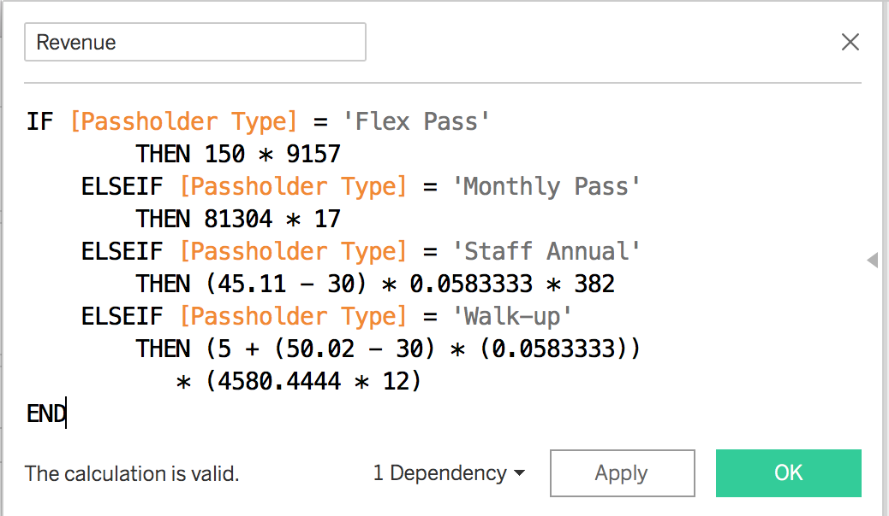
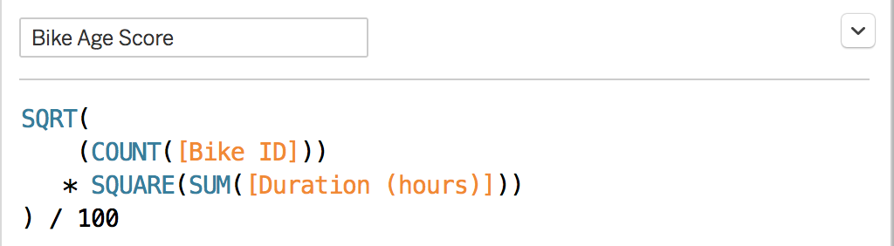

Part 1: Do Particular Stations Have Longer Duration Rides?
In exploring the durations of trips and how starting stations affects those durations, we compose a simple plot
to find that trips beginning at station 3039 have the longest average rides at 126.5 minutes. Stations 3000 and 3009
come at second and third with averages of 85.1 and 83.6 minute trips respectively.
It seems like a phenomenon that station 3039 has such longer average rides (~40 minutes) longer than the next two
stations. The location of 3039 would be an interesting area to explore as it could be located near a geographical
hotspot (i.e. a trail of sorts) that could explain longer routes. Or potentially, the station could be located near
a mall or something similar that would mean users would be consistently sharing bikes for roughly two hours.
The L.A. bikshare metro could capitalize on station 3039 as a particular station where the $1.75/30 minute rate
could be used to generate more revenue as average rides are certainly exceeding the free first 30 minute mark.
The graph can be used to identify similar stations that, on average, also exceed this first 30 minute mark.
Part 2: Which Passholder Type Generates the Most Annual Revenue?
To find annual revenues, we break down this problem with multiple visuals. There were many
assumptions to be made, as there was not enough specific data to get a perfect answer for annual revenue.
Charging rates taken from the official L.A. bikeshare metro site.
Firstly, we want to know how long on average rides are for each passholder type, as that will help us
see where the $1.75/30 min. rate comes into play:
Next, we need to know the number of passes sold. Because we only care bout monthly data (not necessarily year),
we conglomerate all months together (i.e. November 2016 and November 2017 will all be grouped under the same year)
since we assume to expect trends to based on month/season of occurrence rather than the specific year. This way, we
can estimate how pass holder usage occurs with the months:
The number of walk-up passes per month will be averaged from this chart to get a value for the number of walk-up
passes sold per month, which will help in the revenue calculation for walk-up passes in the next visual since
we will need to estimate the revenue from walk-up annually.
The number of passes per month won't really matter for
the monthly or annual pass types since we just have to sum the total number of passes of those two types for the year
and multiply that by the cost per pass to get the annual revenue. And since the average ride duration for both the
monthly and yearly are under 30 minutes, we will make the assumption that most trips are under 30 minutes and thus
ignore the $1.75/30 minutes rate in our calculation for revenue for monthly and annual passholders.
Calculations were performed using numbers derived from these charts, and were used to plot the final chart.
The calculations can be found here:

Overall, from this analysis, we see that Monthly and Annual passes generate the most (and roughly the same)
annual revenue at $1,382,168 and $1,373,550, respectively. It's interesting to note that annual passes still
generated much more revenue than walk-up passes despite more sales of walk-up passes (9157 Annual passes sold
annually vs. 4580.444 * 12 = ~54965 Walk-Up passes sold annually).
Not much is known on staff annual passes, but we can assume that staff annual passes are reserved for LA metro
workers. It makes sense that only 382 staff annual passes were "sold" since there aren't that many workers. Revenue
from these passes was assumed to come strictly from the $1.75/30 min. rate. But regardless, revenue generated from
the staff annual pass is nearly negligble, which makes sense since workers aren't the "main" customer.
Part 3: Can We Predict Which Bikes Need Repairs?
*scroll on the chart to see full listing data for each Bike ID's.
To predict repairs for bikes by their specific Bike ID, we had to find a way to give each
bike an "age score." The leftmost and middle charts give the number of times each bike was used
and the total hours that each bike has been used. To measure bike lifespans, it was
reasoned that the total hours each bike was used would have more weight than the number of
times each bike was used. Thus, the following equation was derived and assigned:

The calculation uses square-rooting to normalize the values found, thus truly giving stronger
weight to the duration used of bikes over their individual usage counts. This means that if a bike
has a very high usage value but low duration number, we wouldn't necessarily see a high age score,
as desired.
We plotted this calculation on the rightmost chart, and color-coded
points based on their respective scores (green meaning good condition, red meaning potentially
bad condition). Bikes with scores at or around 20 are those that we should check for repairs as
they have high usages and longer lifespans. Based on our analyses, Bike 4727, 5838, and 5863
are a few bikes that may need inspection or repairs.